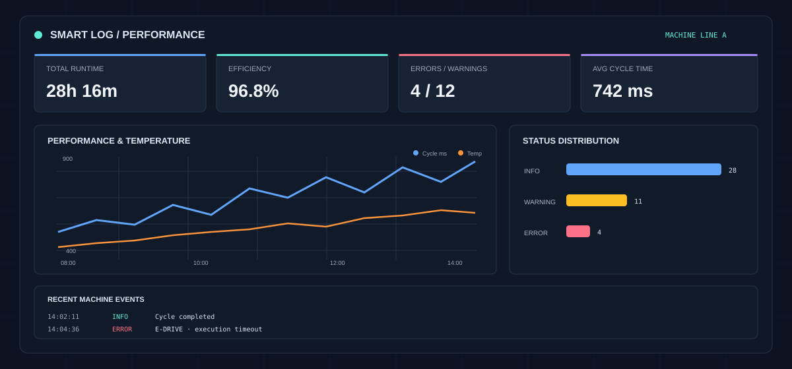

Projekt / DATA ANALYTICS
Smart Log & CSV Performance Dashboard
Interactive Data-Analytics App zur Auswertung von Maschinen-Logs, Fehlerquoten und System-Histories.
- Python
- Streamlit
- Pandas
- Polars
- Plotly
- NumPy
- JSON
- Data Analytics

Dashboard-VorschauDaten verstehen, bevor Ausfälle entstehen
Ein praxistaugliches Python-Dashboard, das Rohdaten (CSV/JSON/Logs) von Systemen und Maschinen einliest, mit Pandas/Polars aufbereitet und mit Plotly interaktiv visualisiert. Es erkennt Ausfälle, berechnet Performance-KPIs und bietet Daten-Exportfunktionen.